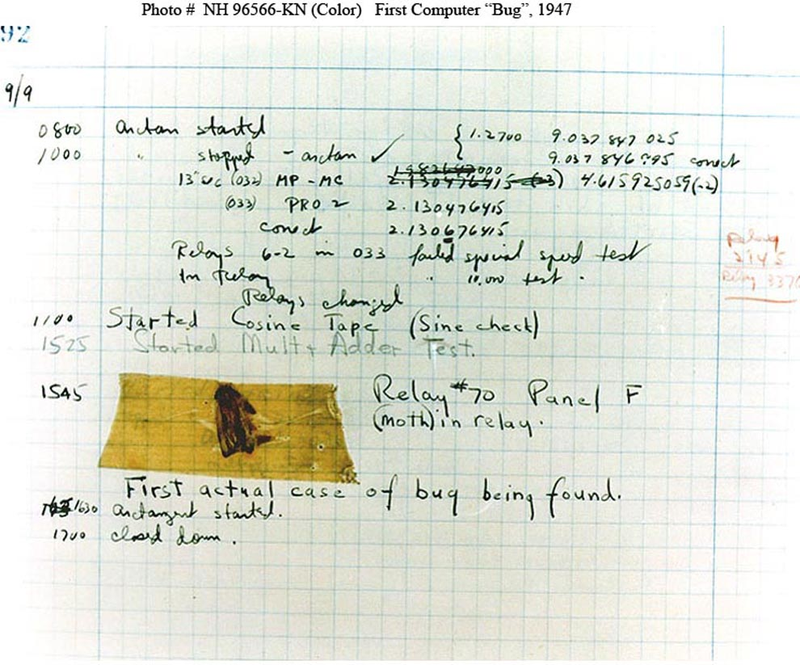

Like this:

On September 9, 1947, the world's first computer bug was reported. The team of computer scientists and engineers at Harvard University, found that their computer Mark II, was delivering consistent errors. When they opened the computer to check the hardware - they found a problem. Turns out it was a real moth that was trapped inside the computer and disrupted electronics.
Actually the term ‘bug’ existed long before computers. It has been used by engineers to describe defects in products since the 1870s. For example Thomas Edison mentioned it in his letter about telephones in 1878. That’s why team members that found moth in the computer thought that it’s funny and one of them even taped an insect on the logbook. That is the picture of the first computer bug report.
